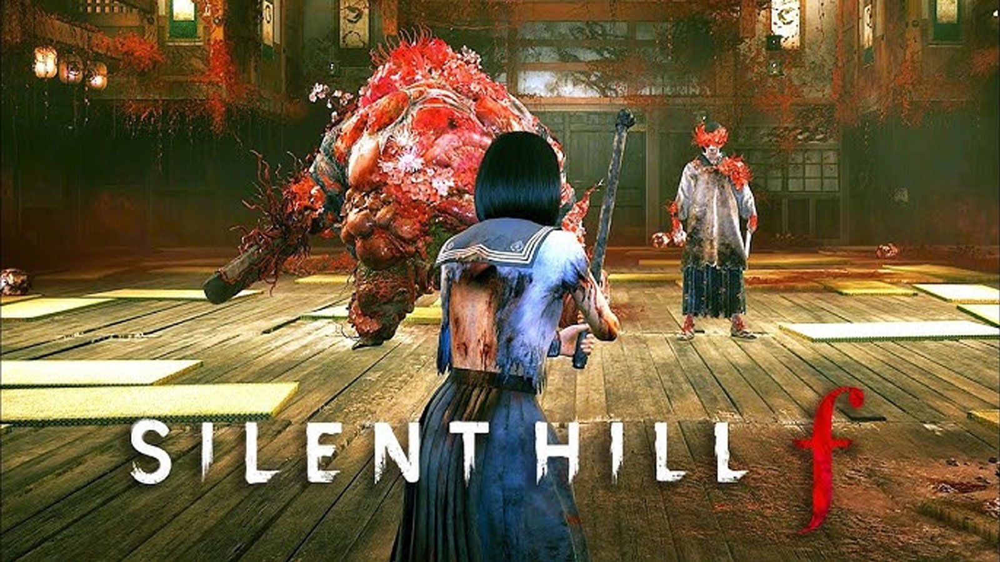

Parents Boss — Strategy & Walkthrough
In the Shimizu Residence, Hinako faces both her father and mother as monstrous foes. The key tactic: defeat the father first—doing so ends the battle immediately even if the mother remains.
Quick Strategy Summary
Critical Tip: Focus all attacks on the Father first. Killing him instantly ends the fight, regardless of the Mother's health status. This is the most efficient strategy and required for certain trophies.
Pre-Fight Preparation
Recommended Loadout
- Healing Items: Red Capsules (if not going for specific endings) or alternative healing items
- Omamori: Equip protective charms for damage reduction
- Panic Recovery: Items to manage fear/panic status effects
- Throwable Items: Useful for safe damage and interrupting attacks
- Melee Weapon: Your best available weapon, fully upgraded if possible
Pre-Fight Checklist
- Save your game before entering the boss room
- Ensure full health and low panic meter
- Check inventory for healing and utility items
- Review your equipped Omamori and their effects
Boss Fight Strategy
Phase 1: Target the Father
- Priority Target: Focus exclusively on the Father
- Positioning: Try to keep both enemies in view while attacking the Father
- Avoid the Mother: Only defend against her attacks, don't waste time attacking her
- Use Hit-and-Run: Attack the Father when safe, retreat when overwhelmed
Father's Attack Patterns
- Heavy Swings: Telegraphed attacks with long recovery - perfect punish windows
- Grab Attempts: Step back when he reaches forward
- Charge Attack: He may rush forward - sidestep and counterattack
- Recovery Windows: After heavy attacks, get 2-3 hits in before retreating
Mother's Attack Patterns
- Quick Swipes: Faster attacks but less damage than Father's
- Defensive Role: Often tries to protect the Father
- Distraction Tactics: May try to flank while you focus on Father
- Ignore Strategy: Only dodge her attacks, don't engage offensively
Combat Tips
Safe Attack Windows
- After Father's Heavy Attacks: 2-3 second window for counterattacks
- When Mother is Distant: Take advantage when she's not in range
- Corner Separation: Try to separate them using the room's layout
- Throwable Interrupts: Use items to interrupt Father's attacks safely
Defensive Strategies
- Perfect Dodges: Time dodges perfectly for brief invincibility windows
- Spatial Awareness: Always know where both enemies are positioned
- Wall Management: Don't get cornered - keep escape routes open
- Panic Control: Use recovery items if panic meter gets too high
Difficulty-Specific Tips
Story Mode
- Enemies deal less damage and move slightly slower
- More forgiving timing on dodges and counterattacks
- Focus on learning attack patterns without time pressure
Hard Mode
- Increased damage output from both enemies
- Faster attack speeds and smaller recovery windows
- More precise timing required for safe punishes
Lost in the Fog
- Maximum difficulty with aggressive AI behavior
- Very small recovery windows - be extremely selective with attacks
- Consider using throwable items more frequently for safe damage
- Perfect timing essential for survival
Trophy Information
Trophy Tip: There may be a trophy related to defeating the Father first or completing this boss fight in a specific way. Always target the Father first to ensure you don't miss any trophy opportunities.
Troubleshooting Common Issues
Getting Overwhelmed
- Take Breaks: Create distance when both enemies are aggressive
- Use Items: Don't save healing items - use them when needed
- Patience: Wait for clear openings rather than forcing attacks
Low Damage Output
- Weapon Upgrades: Ensure your weapon is upgraded as much as possible
- Proper Timing: Attack during recovery windows for maximum damage
- Combo Attacks: Learn your weapon's combo system for higher DPS
Running Out of Items
- Conservative Use: Only heal when health is critically low
- Perfect Dodging: Avoid damage instead of healing it
- Exploration: Make sure you collected all available items before the fight
Strategy based on TheGamer "Parents Boss Fight Tips" and community-verified tactics for optimal boss completion.